Τα έργα, από κοντά
Πέντε έργα, ένα ένα: οι οθόνες τους, τα νούμερά τους και τι άλλαξε από έκδοση σε έκδοση.
01Online
Giannotas Premium Auto Salon
Ιστοσελίδα για έκθεση αυτοκινήτων και κατάστημα ανταλλακτικών στη Λάρισα. Ο πελάτης ανεβάζει τις αγγελίες του στο car.gr, και η ιστοσελίδα τις δείχνει μόνη της.
Ανοίξτε την ιστοσελίδαgiannotaspremiumautosalon.gr 
Το κοντέρ Η αρχική: το λογότυπο ως κοντέρ.
…/antallaktika 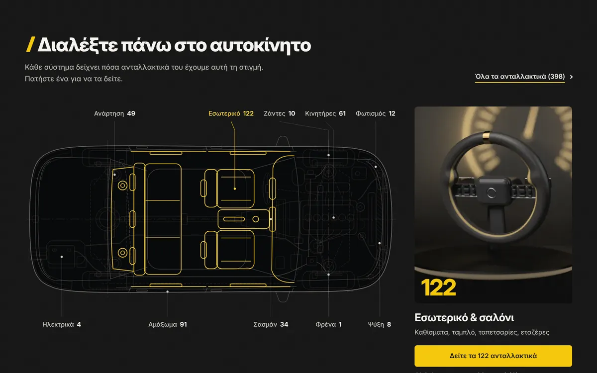
Ακτινογραφία Το αυτοκίνητο σε ακτινογραφία, για να βρίσκετε το ανταλλακτικό.
giannotaspremiumautosalon.gr 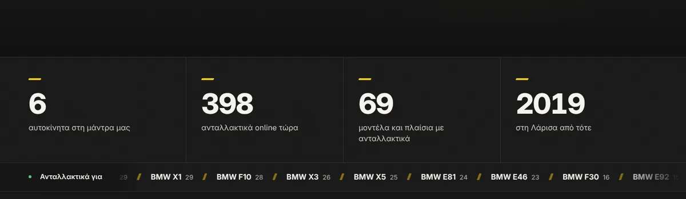
Ζωντανοί αριθμοί Αριθμοί που μετρούν ζωντανά, και ταινία με τα μοντέλα.
…/antallaktika 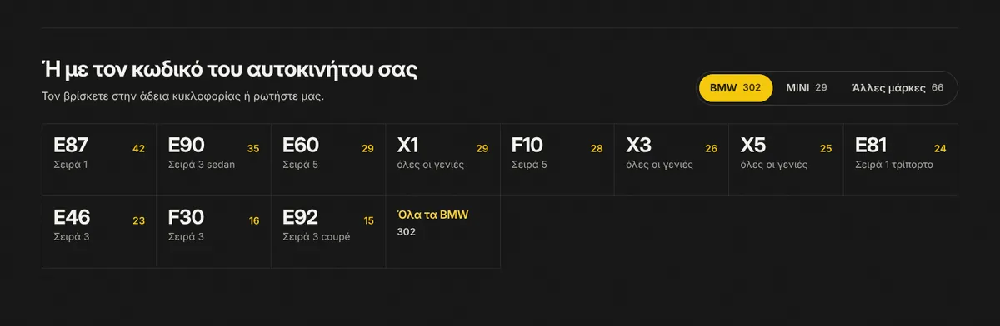
Κωδικός πλαισίου Ανταλλακτικά με τον κωδικό του αυτοκινήτου.
giannotaspremiumautosalon.gr 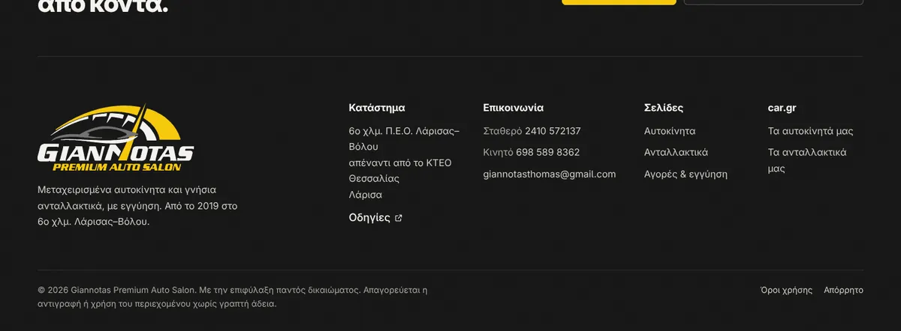
Τέλος σελίδας Το τέλος κάθε σελίδας: κλήση και οδηγίες.
Ζωντανά από το car.gr
Ό,τι πουλιέται και κατεβαίνει από τις αγγελίες, φεύγει και από την ιστοσελίδα, μόνο του.
Αυτοκίνητο σε ακτινογραφία
Πατάτε πάνω στο σύστημα, στα φρένα ή στο εσωτερικό, και βλέπετε τα ανταλλακτικά του.
Με τον κωδικό πλαισίου
E90, F10, R56: η αναζήτηση καταλαβαίνει και ελληνικά και λατινικά γράμματα.
Το αληθινό λογότυπο
Ψηφιοποιημένο από φωτογραφία σε καθαρές γραμμές, με τη βελόνα να κινείται σαν κοντέρ.
Κλήση με επιλογή
Σταθερό ή κινητό, με το ωράριο δίπλα, και φόρμα για ραντεβού ή δοκιμή.
Έτοιμο για Google και Viber
Κάθε αυτοκίνητο έχει δικό του τίτλο, φωτογραφία προεπισκόπησης και θέση στο sitemap.
Αυστηρή ασφάλεια
Content-Security-Policy, HTTPS, έλεγχος κάθε αιτήματος πριν φτάσει στο car.gr.
Ελεγμένο
54 αυτόματοι έλεγχοι, μεγέθη από 320 έως 1920 pixels, μετρημένα 60 καρέ το δευτερόλεπτο.
Πριν και μετά
Σύρετε τη λαβή. Αριστερά μια παλιότερη έκδοση με φωτεινή επιγραφή, δεξιά η σημερινή: το αληθινό λογότυπο, ματ μαύρο, γράμματα που διαβάζονται.
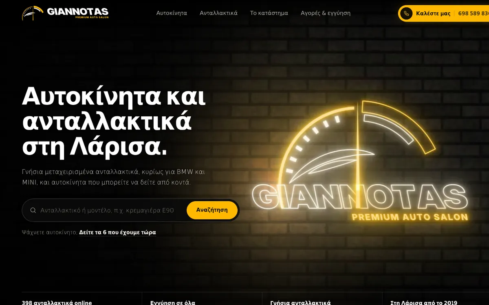
-
25εκδόσεις μέχρι να είναι όπως πρέπει
-
54αυτόματοι έλεγχοι πριν από κάθε παράδοση
-
60καρέ το δευτερόλεπτο στο scroll, μετρημένα
Δείτε όλο το ιστορικό εκδόσεων & τεχνικό αρχείο 25 εκδόσεις, από την πρώτη αρχιτεκτονική μέχρι την τελική λεπτομέρεια.
- v6–v12Η αρχιτεκτονική: σελίδες, σύνδεση με το car.gr, αναζήτηση.
- v13Πρώτη μεγάλη αλλαγή σχεδίου, κουμπί κλήσης με σταθερό και κινητό.
- v14Πιο ομαλές κινήσεις, νέος τίτλος.
- v19–v21Το αληθινό λογότυπο παντού, η βελόνα κινείται, υψηλή ανάλυση.
- v22Εμπορικό σχέδιο, ανοιχτές και σκούρες επιφάνειες.
- v23Ματ μαύρο, κοντέρ στην είσοδο, ζωντανοί αριθμοί, χωρίς 3D.
- v25Inter παντού, ακίνητο λογότυπο: όπως το ήθελε ο πελάτης.
Φτιαγμένο με HTMLCSSJavaScriptVercel FunctionsPlaywrightPython
02Online
PROJECT 7ο
Ανεπίσημη ιστοσελίδα για το 7ο ΕΠΑΛ Λάρισας, το σχολείο μας. Ό,τι χρειάζεται ένας μαθητής μέσα στη μέρα, σε ένα μέρος.
Ανοίξτε την ιστοσελίδα7o-epal-project.vercel.app 
Ζωντανό ρολόι Η αρχική, με ζωντανό ρολόι και κουδούνια.
7o-epal-project.vercel.app 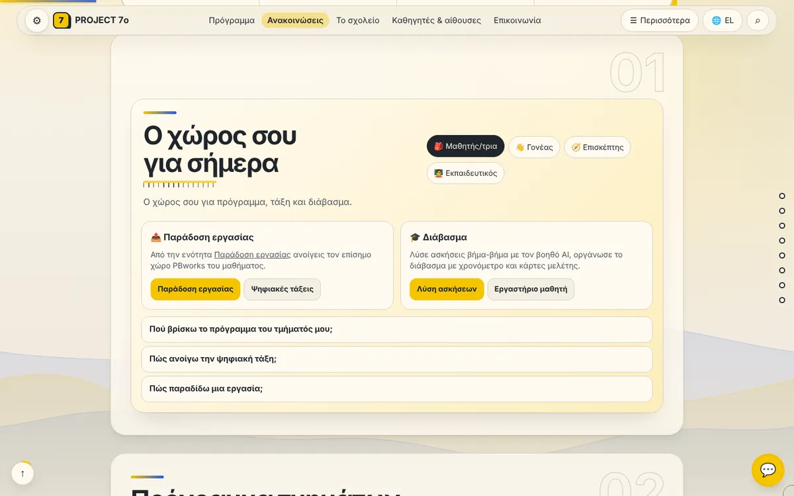
Ο χώρος σου Ό,τι χρειάζεται ο μαθητής για σήμερα.
7o-epal-project.vercel.app 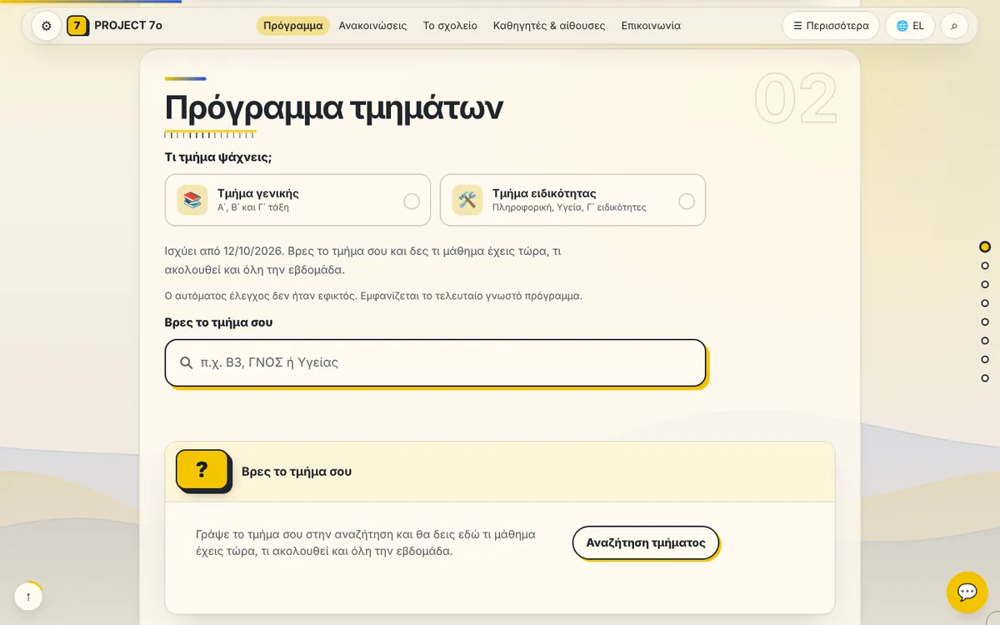
Πρόγραμμα Το πρόγραμμα κάθε τμήματος.
7o-epal-project.vercel.app 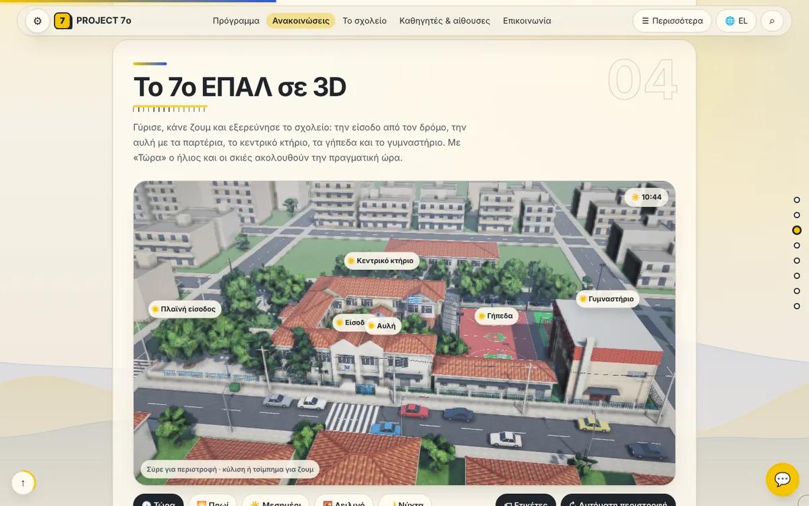
Το σχολείο σε 3D Γυρίστε και εξερευνήστε την είσοδο, την αυλή και τα κτίρια.
7o-epal-project.vercel.app 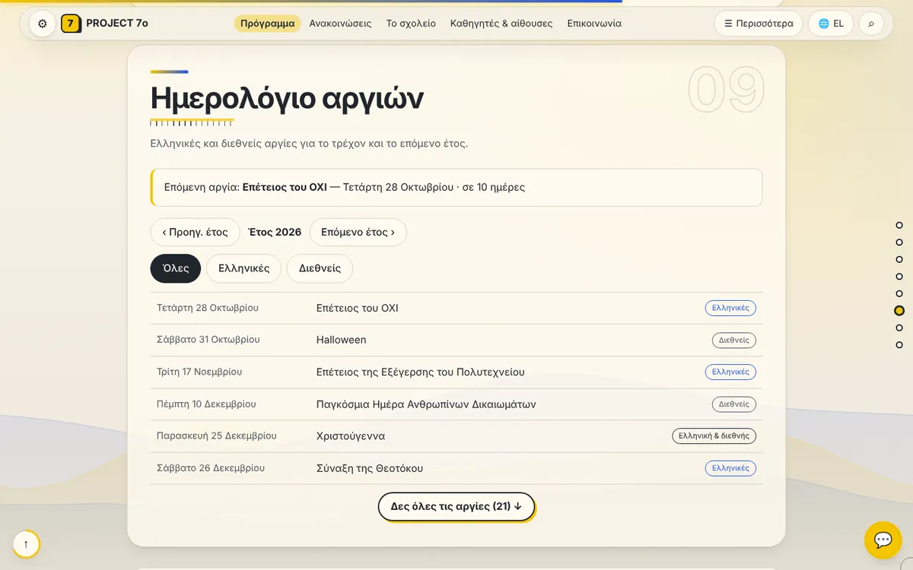
Αργίες Το ημερολόγιο αργιών.
7o-epal-project.vercel.app 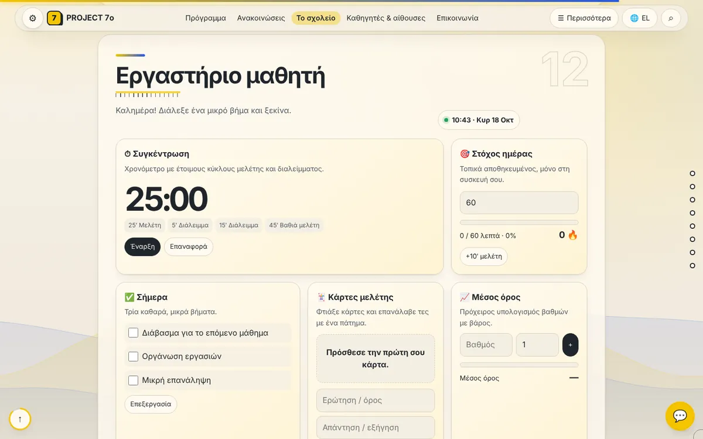
Εργαστήριο Χρονόμετρο μελέτης, στόχος ημέρας, κάρτες μελέτης.
15 γλώσσες, μία ιστοσελίδα
Ελληνικά, αγγλικά, γερμανικά, ισπανικά, ρωσικά, αλβανικά, περσικά, εβραϊκά, γαλλικά, κινεζικά, χίντι, αραβικά, μπενγκάλι, πορτογαλικά και ινδονησιακά: και οι δέκα πιο ομιλούμενες γλώσσες του κόσμου. Τα περσικά, τα εβραϊκά και τα αραβικά γράφονται από δεξιά προς τα αριστερά, και η σελίδα γυρίζει ολόκληρη.
Κουδούνια σε πραγματικό χρόνο
Ποια ώρα είναι τώρα, πότε χτυπάει το επόμενο κουδούνι, με γραμμή που γεμίζει.
Βρες το τμήμα σου
Γράφεις το τμήμα και βλέπεις τι μάθημα έχεις τώρα και όλη την εβδομάδα.
Βοηθός AI
Για ερωτήσεις και ασκήσεις. Το κλειδί του μένει στον server, όχι στον browser.
Λειτουργεί και offline
Εγκαθίσταται σαν εφαρμογή στο κινητό και ανοίγει χωρίς ίντερνετ.
Παράδοση εργασιών
Σύνδεσμοι για τους χώρους του PBworks, προστατευμένοι με κωδικό.
Αναφορά λάθους
Ένα κουμπί για να μας πει κάποιος τι δεν δουλεύει.
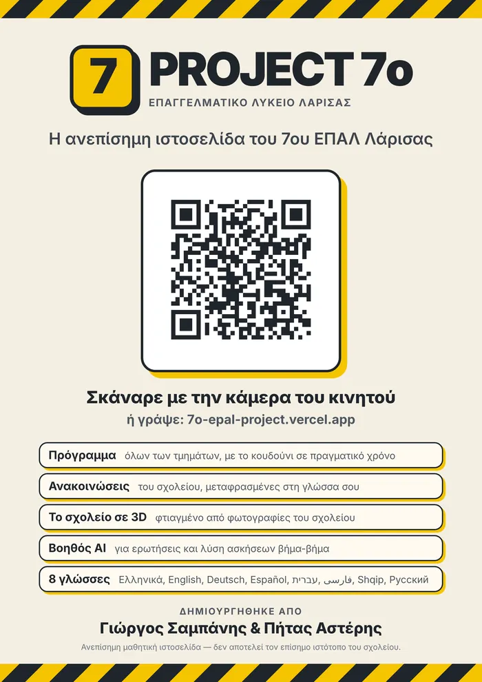
Και μια αφίσα για τους διαδρόμους
Μια αφίσα A4 με κωδικό QR, για να ανοίγει κανείς την ιστοσελίδα με την κάμερα του κινητού του.
Φτιαγμένο με HTMLCSSJavaScriptWebGLService WorkerVercel Functions
03Online
MIRROR
Δικό μας προϊόν: ιστοσελίδα και εφαρμογή για να σκεφτείς μια απόφαση. Γράφεις τις επιλογές σου και βλέπεις πού θα μπορούσε να οδηγήσει η καθεμία, σε τι στηρίζεται, και τον φθηνότερο τρόπο να μάθεις περισσότερα.
Ανοίξτε την ιστοσελίδαprojectmirror.vercel.app 
Ο υγρός καθρέφτης Η ερώτηση καθρεφτίζεται σε υγρό μέταλλο που κυματίζει κάτω από τον δείκτη και χωρίζεται σε τρία μέλλοντα.
projectmirror.vercel.app 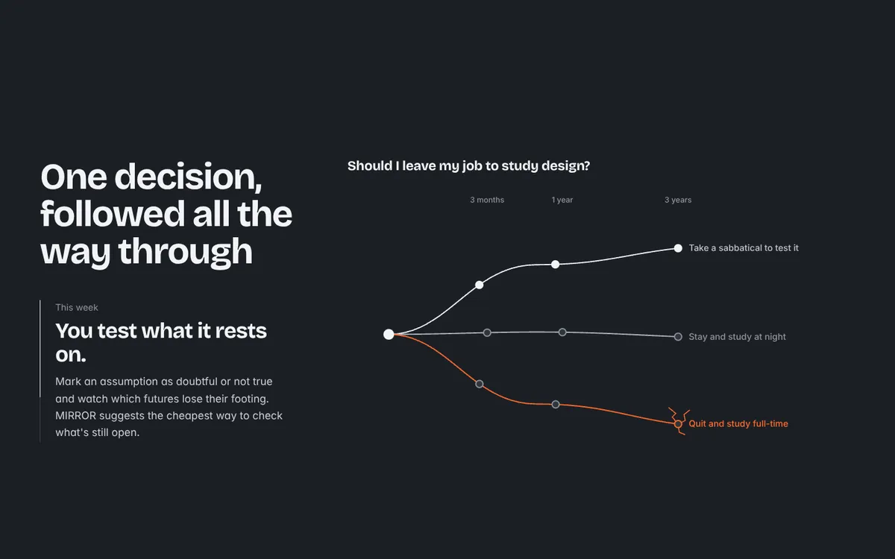
Μία απόφαση, βήμα βήμα Καθώς κάνετε scroll, η απόφαση χωρίζεται σε δρόμους και ένα μέλλον ραγίζει.
projectmirror.vercel.app 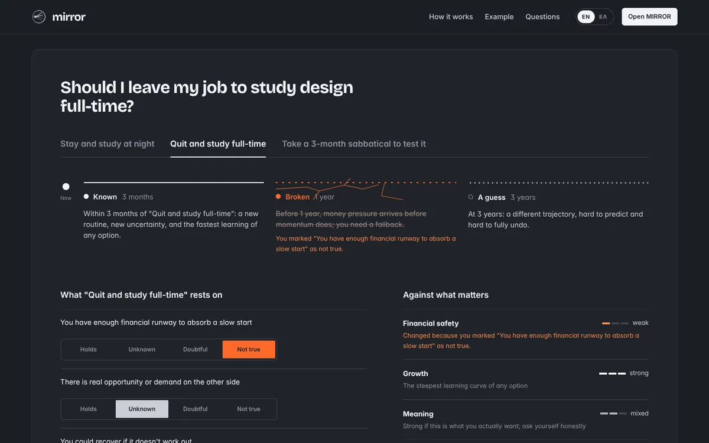
Ζωντανό παράδειγμα Η πραγματική μηχανή: σημειώστε μια υπόθεση ως λάθος και δείτε ποια μέλλοντα σπάνε.
projectmirror.vercel.app 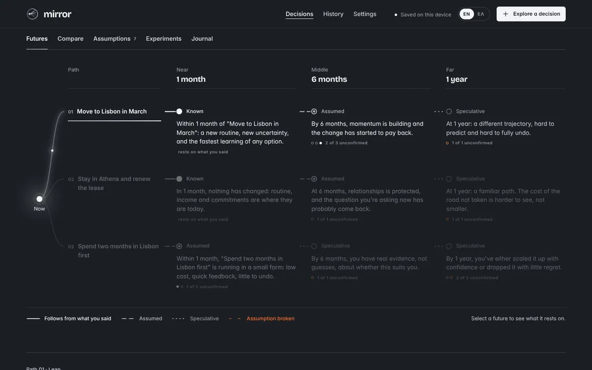
Το Εργαστήριο Μελλόντων Κάθε επιλογή σε τρεις χρονικές στιγμές, με το πόσο σίγουρο είναι κάθε μέλλον.
projectmirror.vercel.app 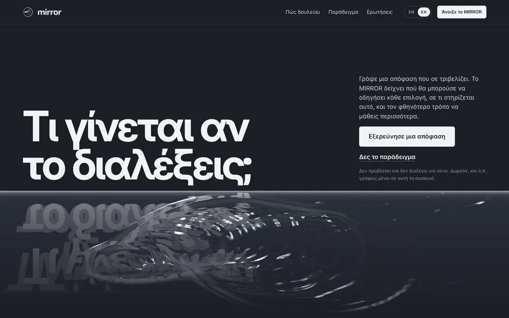
Ελληνικά και αγγλικά Όλη η ιστοσελίδα και η εφαρμογή, και στις δύο γλώσσες.
WebGL από το μηδέν
Ο καθρέφτης είναι δικός μας shader και προσομοίωση κυμάτων, χωρίς βιβλιοθήκες.
Δεν προβλέπει
Κάθε μέλλον σημειώνεται ως γνωστό, υπόθεση ή εικασία. Χωρίς ψεύτικα ποσοστά.
Μένει στη συσκευή σου
Χωρίς λογαριασμό. Οι αποφάσεις αποθηκεύονται μόνο στον browser.
Πειράματα και επανεξέταση
Φθηνές δοκιμές για ό,τι δεν ξέρεις, και μια ημερομηνία για να δεις τι έγινε τελικά.
51 αυτόματοι έλεγχοι
21 unit tests και 30 έλεγχοι σε πραγματικό browser, σε κινητό και υπολογιστή.
Με κίνηση ή χωρίς
Με μειωμένη κίνηση όλα φαίνονται αμέσως και τίποτα δεν περιμένει το scroll.
Φτιαγμένο με TypeScriptWebGL2CSSVercel FunctionsPlaywright
04Online
DAYWIRE
Τι αλλάζει σήμερα στην πόλη σου: διακοπές νερού, κυκλοφοριακές ρυθμίσεις και επίσημες προειδοποιήσεις καιρού, σε έναν πίνακα σαν αυτούς των σταθμών. Μόνο από επίσημες πηγές, ξεκινώντας από τη Λάρισα.
Ανοίξτε την ιστοσελίδαDAYWIRE 
Ο πίνακας της πόλης Κάθε γράμμα είναι πτερύγιο που γυρίζει, όπως στους πίνακες αναχωρήσεων. Οι γραμμές είναι οι σημερινές ανακοινώσεις, με ώρες και κατάσταση.
DAYWIRE 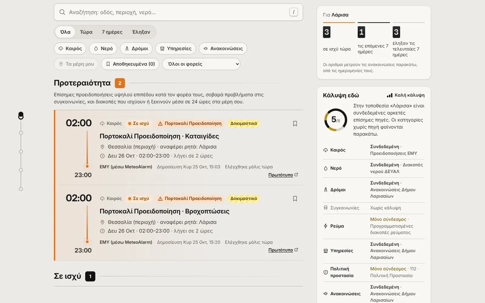
Η μέρα σαν δρομολόγιο Μεγάλες ώρες αριστερά και μια γραμμή που γεμίζει μέχρι το τώρα, όσο μια διακοπή ισχύει.
DAYWIRE 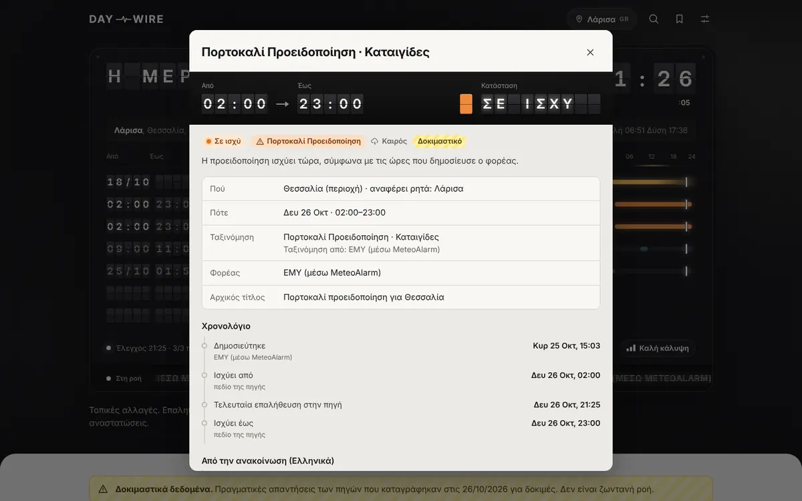
Κάθε ανακοίνωση, ολόκληρη Ποιος το είπε, πότε, πού και πότε το ελέγξαμε, με σύνδεσμο στην πρωτότυπη ανακοίνωση.
DAYWIRE 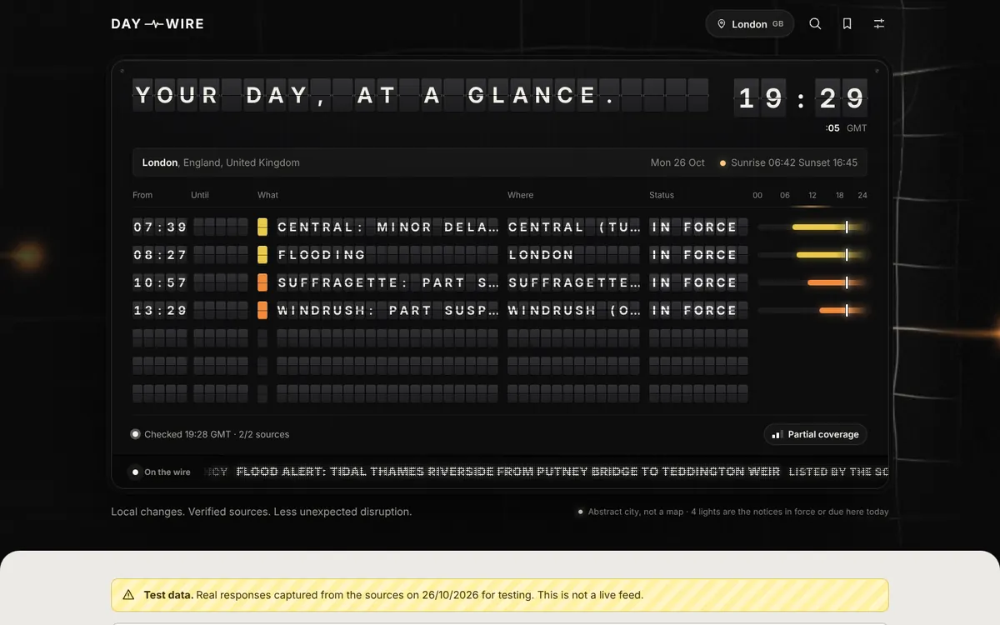
Για κάθε πόλη, στη δική της ώρα Λονδίνο με τις επίσημες πηγές του, στην τοπική του ώρα και στα αγγλικά.
DAYWIRE 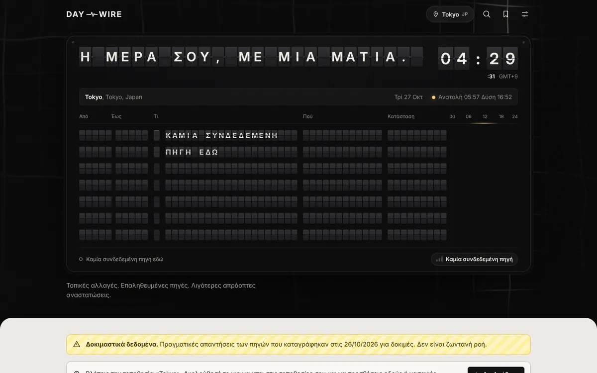
Ειλικρινές όταν δεν ξέρει Εκεί που δεν έχει πηγές, το λέει. Ποτέ «όλα ήσυχα».
Πτερύγια από το μηδέν
Κάθε γράμμα έχει δύο μισά που γυρίζουν μέσα από το αλφάβητο. Γυρίζουν μόνο όσα άλλαξαν. Χωρίς βιβλιοθήκες.
Μόνο επίσημες πηγές
ΔΕΥΑΛ, Δήμος Λαρισαίων και ΕΜΥ μέσω MeteoAlarm. Στο εξωτερικό, NWS, Environment Agency και TfL.
Δεν γεμίζει κενά
Χωρίς πηγές λέει «καμία συνδεδεμένη πηγή». Δεν βάζει ποτέ ψεύτικες ανακοινώσεις για να δείχνει γεμάτο.
Όλος ο κόσμος, χωρίς GPS
Αναζήτηση για κάθε πόλη, με τη σωστή ώρα και ζώνη ώρας του κάθε τόπου.
47 αυτόματοι έλεγχοι
28 unit tests και 19 έλεγχοι σε πραγματικό browser, σε κινητό και υπολογιστή.
Η πόλη σε WebGL
Πίσω από τον πίνακα, μια αφηρημένη πόλη (όχι χάρτης) ανάβει μόνο για τις σημερινές ανακοινώσεις και ακολουθεί τον ήλιο.
Φτιαγμένο με TypeScriptWebGL2CSSVercel FunctionszodPlaywright
05Online
Dubdeck
Δικό μας προϊόν: ο καλλιτέχνης ανεβάζει ένα κομμάτι μία φορά, όλοι ακούνε ένα δείγμα ενός λεπτού σε μια κοινή σκηνή και η κυκλοφορία ξεκινά για το Spotify. Κάθε εβδομάδα, μια αφίσα συναυλίας με όσους ακούστηκαν περισσότερο. Ρετρό '80s, σε ελληνικά και αγγλικά.
Ανοίξτε την ιστοσελίδαdubdeck.vercel.app 
Το κασετόφωνο Ένα διπλό κασετόφωνο: η κασέτα Α παίζει τη σκηνή, η Β γράφει την κυκλοφορία σου για το Spotify. Η χαλαρή κασέτα δίπλα του πετιέται.
dubdeck.vercel.app 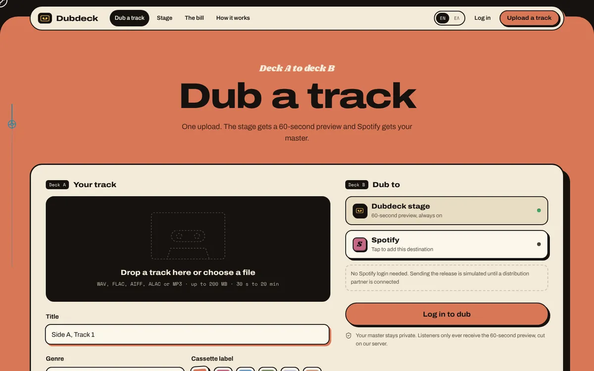
Ανέβασε ένα κομμάτι Ένα αρχείο, ένας τίτλος, μια ετικέτα κασέτας. Διαλέγεις από πού ξεκινά το λεπτό της σκηνής.
dubdeck.vercel.app 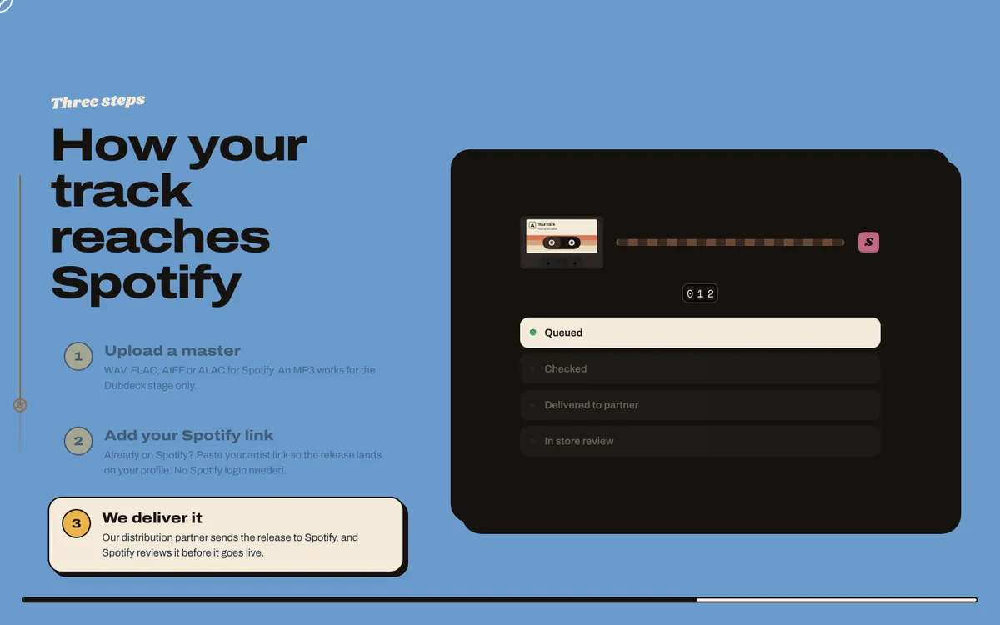
Πώς φτάνει στο Spotify Η ενότητα μένει στη θέση της όσο κάνεις scroll: τα βήματα ανάβουν ένα ένα και η οθόνη δίπλα τα παίζει.
dubdeck.vercel.app/legal 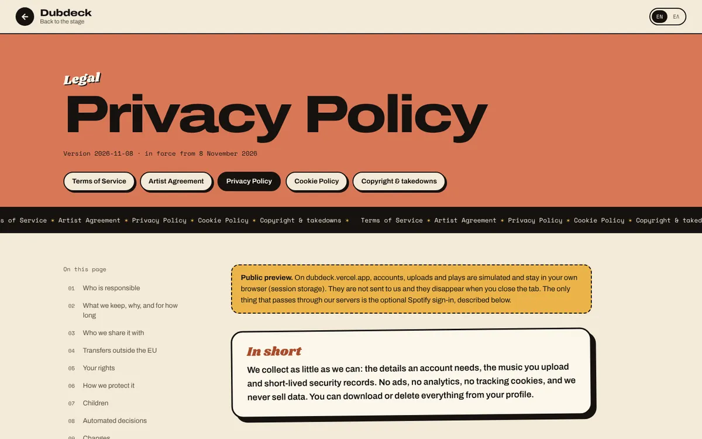
Τα νομικά, ολοκληρωμένα Όροι χρήσης, συμφωνία καλλιτέχνη, απόρρητο, cookies και αφαιρέσεις πνευματικών δικαιωμάτων, κατά το ελληνικό και το ευρωπαϊκό δίκαιο.
dubdeck.vercel.app 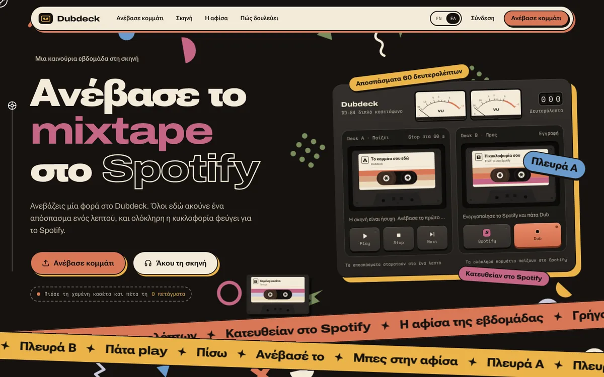
Ελληνικά και αγγλικά Ένας διακριτικός διακόπτης και όλος ο ιστότοπος αλλάζει γλώσσα, μαζί με τις νομικές σελίδες.
Ασφάλεια στο μέγιστο
Αυστηρό CSP με Trusted Types, απομόνωση από άλλους ιστότοπους, προστασία CSRF σε τρία επίπεδα, scrypt και σύνδεση Spotify με PKCE.
Το λεπτό κόβεται στον server
Το δείγμα των 60 δευτερολέπτων φτιάχνεται και ξαναελέγχεται με ffmpeg. Το πλήρες κομμάτι δεν σερβίρεται ποτέ.
Ακροάσεις που δεν φουσκώνουν
Υπογεγραμμένα εισιτήρια: μια ακρόαση μετράει μετά από 30 δευτερόλεπτα, μία φορά τη μέρα, ποτέ από τον ίδιο τον καλλιτέχνη.
Ειλικρινές για το Spotify
Το Spotify δεν δέχεται ανεβάσματα από το κοινό, οπότε η κυκλοφορία περνά από συνεργάτη διανομής. Στη δημόσια προεπισκόπηση η αποστολή είναι προσομοίωση, και το λέει.
51 αυτόματοι έλεγχοι
Για τις κεφαλίδες ασφαλείας, το CSRF, τις συνεδρίες, τα ανεβάσματα, τις ακροάσεις, την εξαγωγή και τη διαγραφή δεδομένων.
Τα δεδομένα σου, δικά σου
Χωρίς cookies παρακολούθησης. Κατεβάζεις ό,τι κρατάμε για σένα ή διαγράφεις τον λογαριασμό με ένα κουμπί.
Φτιαγμένο με JavaScriptNode.jsFastifySQLiteffmpegVercel FunctionsPlaywright